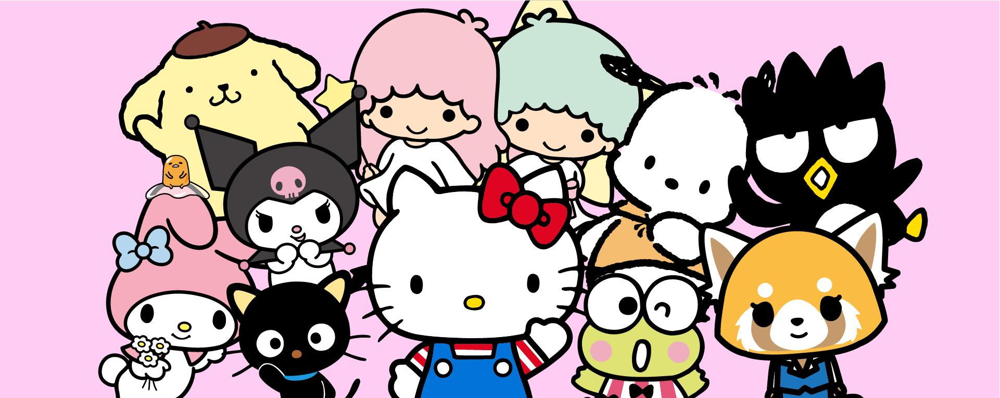

Sanrio
A Sanrio é uma empresa japonesa especializada na criação e licenciamento de personagens e produtos de cultura pop. Fundada em 1960, tornou-se mundialmente famosa por ícones como Hello Kitty, My Melody e Cinnamoroll, combinando design “kawaii” (fofo) com uma ampla gama de produtos e experiências temáticas.

Origens e expansão
Originalmente chamada Yamanashi Silk Company, a empresa começou vendendo artigos de papelaria com designs fofos. Ao adotar o nome Sanrio em 1973, expandiu seu portfólio para incluir personagens originais e produtos de uso diário. O sucesso da Hello Kitty impulsionou a internacionalização da marca nos anos 1970 e 1980.
Modelo de negócios e licenciamento
A Sanrio opera principalmente através do licenciamento de suas propriedades intelectuais para fabricantes e parceiros de mídia. Isso permite que seus personagens apareçam em milhares de produtos — de brinquedos e roupas a filmes e parques temáticos — sem depender exclusivamente da fabricação própria.
Impacto cultural
A estética “kawaii” promovida pela Sanrio influenciou fortemente a cultura japonesa contemporânea e tornou-se um fenômeno global. A empresa ajudou a moldar a identidade visual do Japão moderno e inspirou colaborações com marcas de moda, tecnologia e entretenimento em todo o mundo.
Atividades recentes
A Sanrio continua a expandir suas franquias por meio de colaborações internacionais e plataformas digitais. Além dos personagens clássicos, vem lançando novas criações e projetos multimídia, mantendo relevância entre gerações de fãs e consolidando-se como um dos maiores ícones da cultura pop japonesa.